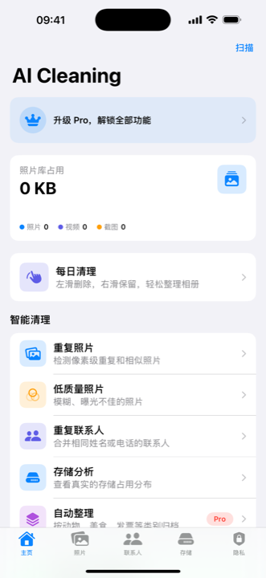

CrazyAIAgent 中文入口
独立开发的 iPhone 和 Mac 应用。
这里是 CrazyAIAgent 几款 App 的中文入口。主推 AI Cleaning 的 AI 照片智能分类和 iPhone 相册清理，也包括出国翻译通和 Anti-spy screen Mac 屏幕隐私工具。 先按需求了解功能，再进入对应 App Store 页面。

产品关系
三类工具，都是解决日常明确问题。
这个网站不是单个 App 的页面，而是独立开发者作品集。照片整理解决相册太乱， 出国翻译解决旅行和跨语言沟通，Mac 屏幕隐私解决办公、防窥、共享屏幕和演示保护。
面向旅行、学习和跨语言沟通，支持语音翻译、朗读播放、拍照 OCR 翻译和语言切换。
面向 Mac 屏幕隐私、防窥屏、共享屏幕和演示保护场景，适合办公和远程会议。
想了解 AI 分类看 中文 AI 照片分类指南；想整理相册看 iPhone 照片清理指南；想复查重复照片看 重复照片清理指南；出国沟通看 出国翻译通；Mac 隐私看 屏幕隐私工具。
用 Seedance 2.5、Dreamina 或 CapCut 做 AI 视频？看 Seedance 2.5 创作者工具推荐，了解如何高效管理 AI 生成的海量素材。
常见问题
按需求选择中文应用入口。
下面的问答把相册整理、照片清理、出国翻译和 Mac 屏幕隐私对应到具体应用， 方便先判断再进入 App Store。
如果主要问题是 iPhone 相册太乱，先看 AI Cleaning。它先做 AI 照片智能分类，再让你检查重复照片、相似照片、截图、模糊照片和大文件。
AI 照片分类先把食物、植物、动物、票据、证件、文档、合照等照片分出来，再进入清理流程，适合不想误删重要照片的用户。
出国翻译通适合旅行、学习和跨语言沟通；Anti-spy screen 适合办公、防窥、共享屏幕、远程会议和演示保护。